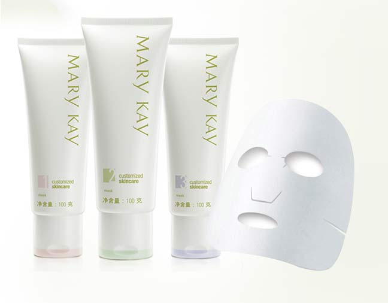
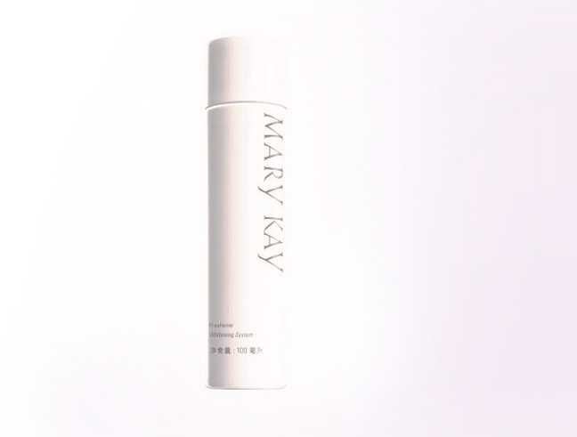
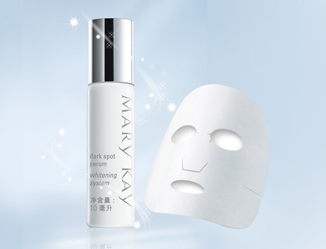

1.快来见证美白面膜加减法的神奇魔力！
采用“减-加-休”的护理程序，第一天使用减法面膜如经典护肤系列面膜、美白面膜，第二天使用美白润泽面膜，第三天休息的方法，先减后加，将美白效果发挥到淋漓尽致。这种方法很适合在急速想要回复美白的时候哦～

2.妙用美白淡斑爽肤水
在不做面膜的日子里，可以用化妆棉蘸满爽肤水贴在面部着重需要美白的部位，可以集中补水的同时渗透美白成分，让肌肤净白透亮。

3.让面膜“膜”力加倍！
先用美白焦点淡斑精华点涂在色斑处，再敷用美白润泽面膜，可以让精华更好渗入肌肤深处，达到叠加美白效果。

播放视频《润泽面膜使用方法》
*建议在WIFI环境下观看